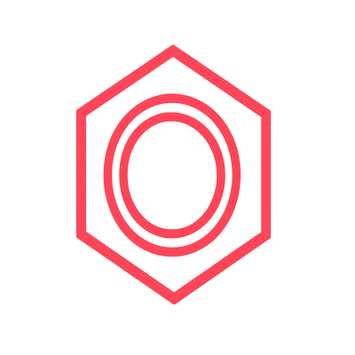
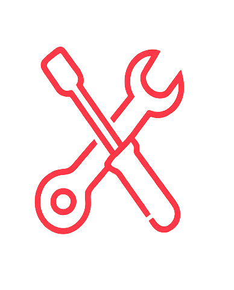
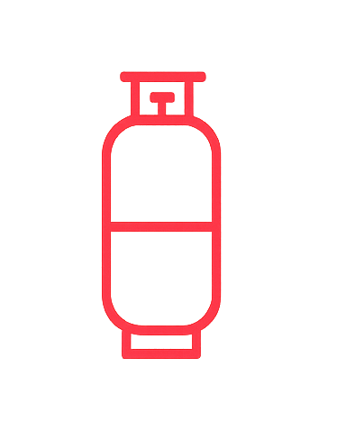

ВСТАНОВЛЕННЯ ТА РЕМОНТ ГБО
У БУЧІ, КИЄВІ ТА ОБЛАСТІ
Обслуговуємо авто з: Києва • Ірпеня • Гостомеля • Ворзеля
Зменшуйте витрати на паливі до 50%
м. Буча, Київська обл., вул. Депутатська, 3
Працюємо з понеділка по суботу!
Наші послуги з ГБО у Бучі, Києві та області
Установка ГБО
2 3 4 5 поколінь
Від 3000 грн
Компьютерна діагностика ГБО
від 200 грн
Ремонт ГБО
будь-яких типів
від 250 грн
Налаштування ГБО
з OBD у русі
Від 500 грн
Про наш сервіс ГБО
-
Професійність: Роки успішної роботи та сотні задоволених клієнтів.
-
Відповідальність: Дотримуємося домовленостей і виконуємо обіцяне.
-
Якість: Не економимо на матеріалах та деталях.
-
Вигода: Оптимальне співвідношення ціни та якості.
-
Швидкість: Оперативне виконання замовлень.
-
Гарантія: Тримаємо гарантійні зобов'язання на обладнання та роботу.
Потрібне встановлення або ремонт ГБО у вашому місті?
Ми обслуговуємо водіїв з усіх міст Київської області. Зручне розташування у Бучі дозволяє швидко доїхати до нас:

Встанови ГБО в
7 кроків
Залиш заявку або зателефонуй
Зв'яжись з нами через сайт або зателефонуй за номером, вказаним на сайті. Наш менеджер відповість на всі твої запитання.
Консультація та вибір обладнання
Разом з фахівцем виберемо оптимальне обладнання для твого авто, враховуючи твої потреби та бюджет.
Візит на СТО
Заїжджай до нас на станцію технічного обслуговування у зручний для тебе час. Попередньо краще записатись.
Встановлення ГБО
Наші кваліфіковані майстри професійно встановлять газобалонне обладнання на твій автомобіль.
Діагностика та калібрування
Після встановлення проводимо повну діагностику системи та калібруємо обладнання для оптимальної роботи.
Оплата послуг
Сплачуй за послуги зручним для тебе способом - готівкою або банківською карткою.
Сертифікація та гарантія
Отримай всі необхідні документи, сертифікати та гарантію на встановлене обладнання і роботи.
Калькулятор окупності ГБО
Розрахуйте, скільки ви заощадите на встановленні газового обладнання
Економія на рік
0 ₴
Окупність
0 місяців
Економія на 100 км
0 ₴
Загальна економія за 3 роки
0 ₴
Ми використовуємо тільки перевірених і надійних виробників газового обладнання
Якісне ГБО обладнання – запорука безпеки та економії вашого автомобіля. Наші бренди зарекомендували себе високою якістю та надійністю!
Встановлення ГБО в Україні: повний посібник 2024
Чому варто обрати перевірених виробників ГБО для авто?
Професійне встановлення газобалонного обладнання від надійних виробників гарантує безпеку та ефективність. Наш сервіс у Бучі пропонує:
- Безпеку експлуатації – сертифіковане обладнання з європейськими стандартами якості
- Збереження ресурсу двигуна – правильна робота системи запобігає зносу деталей
- Реальну економію – зменшення витрат на паливо до 50% для мешканців Київської області
- Стабільність роботи – відсутність перебоїв навіть при низьких температурах
- Офіційну гарантію – сервісне обслуговування по всій Україні
Рейтинг найкращих брендів ГБО 2024
Топ-перевірені виробники газового обладнання в Україні
Наша СТО у Бучі співпрацює з провідними виробниками газового обладнання:
STAG AC (Польща) – оптимальний вибір для України
Сучасні системи управління з високою точністю впорскування. Ідеальне рішення для встановлення ГБО в Київській області за доступною ціною.
TOMASETTO (Італія) – європейська надійність
Редуктори та фільтри, адаптовані до українських умов експлуатації. Відмінна робота взимку та спекотним літом.
VALTEC (Італія) – преміальна якість
Компоненти з підвищеною довговічністю для требованих автовласників. Максимальний термін служби системи.
KME (Польща) – інноваційні технології
Передові системи впорскування газу з точним контролем спалювання палива.
ГБО в Бучі: переваги установки у професійному сервісі
Наша станція в Бучі пропонує повний комплекс послуг з газобалонного обладнання:
- Безкоштовна консультація щодо вибору ГБО
- Професійний монтаж з дотриманням технологій
- Оформлення документів для Сервісного центру
- Сервісне обслуговування та ремонт ГБО
- Гарантія на обладнання та роботи

Отримайте знижку 5 % на встановлення ГБО прямо зараз!
Залиште свій номер телефону і наш менеджер зв'яжеться з вами для оформлення знижки
Відгуки наших клієнтів

Олександр Петренко
Дуже задоволений установкою ГБО на СТО «Алекс-ГАЗ» у Бучі, на Депутатській, 3. Майстер Олександр провів консультацію, все якісно встановив та налаштував. Робота акуратна, матеріали якісні. Рекомендую цю станцію для монтажу газового обладнання, як перевірений варіант.

Наталія Іваненко
Регулярно проходжу планове ТО для свого ГБО на цій станції. Працюють завжди швидко, якісно, дають гарантію на обслуговування. Хлопці — уважні і відповідальні майстри. Раджу «Алекс-ГАЗ» у Бучі всім, хто цінує надійність та професіоналізм.

Андрій Василенко
Встановлював ГБО на своє авто саме тут, на вулиці Депутатській, 3. Залишився дуже задоволений роботою майстра Олександра. Від початку до кінця все було зроблено професійно, чисто та в обумовлений термін. Система працює бездоганно, економія відчутна. Дякую «Алекс-ГАЗ»!
Поширені запитання про встановлення ГБО
Так, встановлення ГБО у Бучі дуже вигідно! Економія складає 40-50% на паливі:
- При пробігу 1500 км/місяць: економія 3000-4000 грн
- При пробігу 2500 км/місяць: економія 5000-7000 грн
- Окупність встановлення ГБО: 6-8 місяців
Для клієнтів з Києва, Ірпеня, Гостомеля - це найвигідніша інвестиція в авто.
СТО АЛЕКС-ГАЗ у Бучі - професійне встановлення ГБО з гарантією 12 місяців:
- Адреса: Буча, вул. Депутатська, 3
- З Києва: 25-30 хвилин (Оболонь, Поділ)
- З Ірпеня: 15 хвилин
- З Гостомеля: 10 хвилин
Використовуємо сертифіковане обладнання KME, Tomasetto, STAG. Маємо 10+ років досвіду.
Рекомендуємо перевірені бренди для українських умов:
- KME/Tomasetto - оптимальне співвідношення ціна/якість (від 14 900 грн)
- STAG - популярне рішення для більшості авто
- Yota - хороша якість за розумну ціну
Наші спеціалісти допоможуть підібрати оптимальний варіант під ваше авто та бюджет.
Сучасні системи ГБО 4-5 покоління мінімізують втрату потужності:
- Втрата потужності: всього 2-5% (не відчутно при їзді)
- Правильне налаштування зберігає динамічні характеристики
- Автоматичне перемикання газ/бензин при навантаженні
Наші майстри налаштовують ГБО так, що різниця у потужності практично не відчувається.
Регламентне обслуговування ГБО рекомендується:
- Кожні 10 тис. км або 1 раз на рік
- Заміна газових фільтрів - кожні 10 000 км
- Регулювання редуктора - при зміні сезону (літо/зима)
- Комп'ютерна діагностика - при появі симптомів
Вартість ТО ГБО у Бучі - від 500 грн. Багато клієнтів з Києва приїжджають до нас на регулярне обслуговування.
Перехід з бензину на газ абсолютно автоматичний:
- Час перемикання: 2-3 секунди
- Система сама перемикається під час прогріву двигуна
- Водій може вручну перемикати паливо однією кнопкою
- Ніяких додаткових дій від водія не потрібно
Після встановлення ГБО у Бучі ви просто їдете - система все робить автоматично.
СТО АЛЕКС-ГАЗ надає повну гарантію 12 місяців на:
- Газове обладнання (редуктор, форсунки, ЕБУ)
- Роботи з монтажу та налаштування
- Безкоштовне ТО під час гарантійного періоду
- Консультації та діагностику
Гарантія діє для всіх клієнтів з Бучі, Києва, Ірпеня, Гостомеля, Ворзеля.
Так, сертифікація ГБО обов'язкова для легальної експлуатації:
- Сертифікація ГБО Україна - від 3000 грн
- Сертифікація ГБО Европа - від 4000 грн
- Сертифікація ГБО Америка - від 7000 грн
Без сертифіката неможливо пройти техогляд. Допомагаємо клієнтам з Києва, Ірпеня, Гостомеля легалізувати ГБО.
Встановлення ГБО 4 покоління займає:
- Стандартне встановлення - 1 робочий день (6-8 годин)
- Складні моделі авто - до 1.5 днів
- Діагностика/ремонт ГБО - від 30 хвилин до 3 годин
Можна залишити авто вранці та забрати ввечері. Для клієнтів з Києва, Ірпеня - зручний графік з 8:30 до 18:00.
Записатись на встановлення ГБО дуже просто:
- Телефон: +38 (050) 819-97-57
- Графік роботи: Пн-Сб, 8:30-18:00
- Адреса: Буча, вул. Депутатська, 3
- Консультація: безкоштовна
Перед записом назвіть: марку авто, об'єм двигуна, бажані бренди обладнання.
Ваш запит відправлено!
Наші спеціалісти зателефонують Вам протягом 10 хвилин!